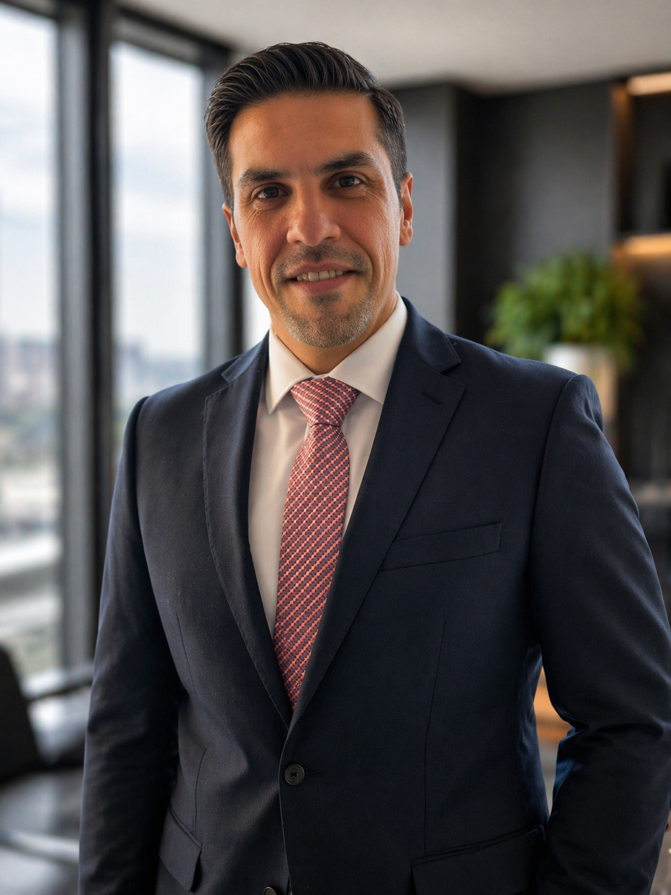

A professional profile built on customer service excellence, operational support, financial administration, education consultancy, and practical digital project work across the UAE and the United Kingdom.

I am a results-driven professional with a background spanning customer service, client relations, accounts support, financial operations, technical support, and education consultancy. Over the years, I have worked in roles that required communication, service mindset, accuracy, structured workflow, and the ability to perform under pressure while maintaining professionalism.
My experience across the UAE and the UK has strengthened my ability to adapt to different work environments, interact with diverse clients, and maintain a dependable, business-focused approach in both operational and customer-facing roles. I bring practical experience in dealing with people, handling service issues, supporting administrative and financial processes, and contributing to positive customer outcomes.
In addition to my service and business background, I have also worked on digital platforms and content projects, including consultancy websites, a customer-ordering web app, and finance and education-focused media channels. This gives me added value in modern roles where communication, digital awareness, and presentation matter alongside traditional business support.
I hold a Master of Science in International Business Management from the University of Sunderland in the United Kingdom, together with a Bachelor of Business Administration in Banking and Finance from the University of Jazeera, Dubai. These qualifications support a strong academic foundation in business, finance, management, and international professional practice.
My experience combines people skills, business support, administrative awareness, and digital thinking, allowing me to contribute across multiple role types rather than a narrow single-function position.
Skilled in communication, complaint handling, relationship-building, and maintaining a positive customer experience through clear, professional support.
Experience in billing, payments, account support, insurance coordination, reporting, records handling, and maintaining accurate operational processes.
Supported UK education guidance through student communication, admissions-related assistance, service explanation, and trust-based advisory support.
Professional experience in both the UAE and UK has developed flexibility, multicultural awareness, and the ability to work effectively in different service and business environments.
Worked on websites, app concepts, online branding, and content platforms, adding modern digital value to my traditional business and service background.
Known for a practical, calm, and dependable working approach with attention to service quality, communication standards, and consistent follow-through.
I offer employers a balanced profile that combines customer service capability, operational and financial support experience, international exposure, strong communication, and digital awareness. This makes me a strong fit for customer service, client relations, banking support, administration, consultancy, and modern business support roles where reliability and presentation both matter.